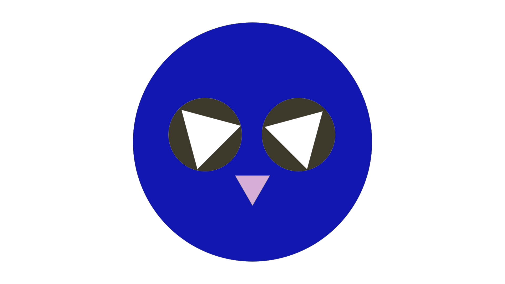

- Open XD
- On the top left of your screen, click "New file".
- Press E on your keyboard to use the Ellipse tool.
- On the center of your canvas, click on a point, hold shift, and drag down to the bottom right to make a circle.
- On the menu to the right of your screen, scroll until you see "Fill".
- Click on the empty white box next to the word "Fill" and make the color of the circle your favorite color.
- Use the Ellipse tool again and in the same way that you made the first circle, make two smaller circles in the middle of the circle you just drew. Make sure that the two circles are next to each other and have some space between them.
- Go to "Fill" again and make those two circles the color of your eyes.
- Now press "Y" on your keyboard to use the Polygon tool and, holding shift again, click on a point on your canvas and drag your mouse down to the bottom right to make a triangle.
- Repeat the previous step.
- Click on one of the triangles and move your mouse to the bottom right circle until you see a curved arrow.
- Click your mouse and drag it towards the left until the top of your triangle is pointed 45 degrees to the right.
- Move your mouse to the center of your tilted triangle and drag it over to the first circle you made.
- Make sure that the bottom of the trangle touches the top right of the first circle that you made.
- Drag your mouse back to your other triangle and click it.
- Move your mouse to the bottom left circle of the triangle until you see a curved arrow symbol pop up again.
- Drag your mouse to the right until the top of your triangle points 45 degrees to the left.
- Move your mouse to the center of the tilted triangle and drag it over to the first circle that you made.
- Make sure that the bottom of the triangle touches the top left of the circle.
- Use the Polygon tool again and, holding shift, make a triangle smaller than the two triangles you had just made.
- Click on the center of the triangle and move your mouse towards the top center circle until you see a curved arrow symbol.
- Click your mouse and drag it to the right and then down until your triangle is upside down.
- Click on the center of your now upside down triangle and drag it to the first circle that you made.
- Place the upside down triangle inbetween the two cirlces that you made the color of your eyes.
- Hold shift, and press the downward arrow on your keyboard.
- Press the downward arrow 5 times.
- On the menu to the righthand side of the screen, scroll until you see the "Fill" option again and make the color of the upside down triangle light pink.
- You're all done! Email drawing to me at: jjoven@gmu.edu :)
Drawings Made Based on Above Instructions:
My Drawing:
Tre'lise & Nomin's Drawings:
